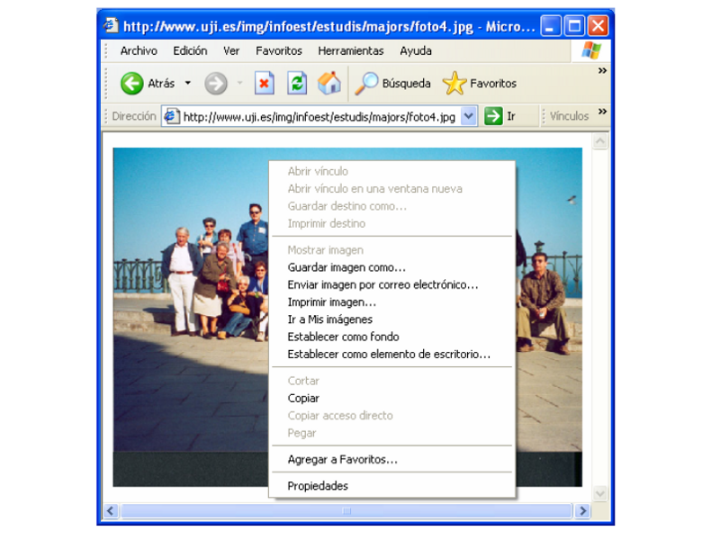

1. Introducción
La práctica de hoy es importante, ya que intentaremos hacer y entender una de las funciones principales de la informática, el guardado/apertura de información. Me gustaría que realizarais la práctica poco a poco y cualquier cosa que no entendáis me lo comentáis para que lo expliquemos.
2. Guardar un archivo en Paint.
Empezaremos creando un dibujo como ya hemos hecho anteriormente, pero esta vez lo guardaremos en el disco para poder abrirlo posteriormente.
- Desde el Menú inicio abre el Paint.
- Crea un dibujo: un sol, una flor, un corazón, un bodegón, lo que quieras.
- Utilizando la función de Guardar que encontrarás en el menú principal, guarda el documento en el disco duro.
- Cierra el paint.
2. Abrir un archivo en Paint
Vamos a realizar ahora el proceso complementario a guardar. Vamos a abrir el archivo que hemos guardado previamente.
- Abre Paint de nuevo.
- Desde la sección de apertura de archivos, abre el archivo que has creado previamente.
- Comprueba que está todo tal cual lo dejaste cuando lo guardaste.
3. Botón derecho del ratón y menú contexual
Vamos a realizar ahora una práctica donde enlazaremos varios de los temas vistos anteriormente. Quiero que busquéis imágenes en Google, y que las guardéis como imágenes en vuestro ordenador. Para ello utilizaremos un navegador, el buscador de imágenes de Google, el botón derecho del ratón, y el diálogo de guardar archivos.
- Abre un navegador. Por ejemplo Google Chrome.
- Accede a la página de google.es.
- Ves a la sección de búsqueda de imágenes.
- Busca imágenes de aurora boreal.
- De los resultados que te aparecen, elige la foto que más te guste y pincha sobre ella para verla a mayor resolución.
- Una vez con la imagen a tamaño completo en la pantalla, pulsa el botón derecho sobre la imagen y elige la opción Guardar imagen como....
- Guarda la imagen en la carpeta Imágenes con el nombre aurora boreal.
- Abre ahora el Paint y comprueba que efectivamente puedes abrir la imagen que has descargado de la web.
4. Más ejercicios
Si has terminado los puntos propuestos para la práctica, haz ahora una búsqueda de imágenes de los sitios representativos de tu pueblo/ciudad, y guarda las imágenes igual que lo hemos hecho con la Aurora boreal.
Finalmente, prueba ahora a crear un documento con Wordpad, guardarlo y volverlo a abrir.